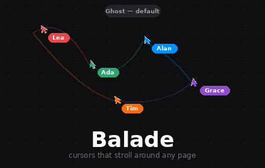

Ghost - default
Balade
cursors that stroll around any page

cursors that stroll around any page

Balade saves you zero time. It secures nothing, converts nobody and measures nothing. It just makes little cursors live on your pages, because simulating a human, gesture by gesture, is one of the most beautiful problems you can give yourself.
Pretty but useless. That is the whole point: an excuse to explore the science of motion, attention and social life, using arrows.
A cursor that slides in a straight line at constant speed is a robot. A human speeds up, slows down, curves, hesitates. Here are the ingredients.
The time to reach a target depends on its distance and its size.
Estimated time: , difficulty bits
The position profile that minimizes sudden jolts. It is the signature of human reaching movements.
The speed peak lands before the midpoint: a sharp start, a long deceleration to aim. Each cursor keeps its own curve for life.
A hand draws arcs, not lines. The extension traces circular arcs turtle-style, then applies a similarity (rotation + scale + translation) to land exactly on target.
The cursor chases its target as if on a rubber band. Move your mouse over the box.
For wandering and group life: steering behaviors (wander, separation, cohesion). A force steers the cursor, never a teleport. Try the switches on the simulation below.
Moving well is not enough. You need a reason to move.
A visited spot loses its appeal, then slowly regains it.
Whatever just appeared attracts. The eye follows change.
The next state depends on the current one: explore, read, hesitate, rest.
Aim slightly ahead of a moving target, like a real gaze.
Leader, follower, curious, shy. Each one has its own tempo.
Calm, excited, tired: speed, tremor and pauses all change.
Live mini-simulation: dots fade when visited (satiety) and light up again over time. Click to drop a novelty. The Reynolds switches above really drive this simulation.
A few micro-optimizations measured on the internal bench (200,000 gestures x 24 steps).
Iterative heading rotation (complex multiply) instead of cos/sin per step. Bit-exact. The sin table was 3x slower, Taylor 5 wrong.
sin(3t + p) expanded from the already-known cos/sin, no atan2. The cosine pre-filter was slower than plain acos: rejected.
Neighbors tested on squared distances, sqrt reserved for the close few. Sampled gesture curves: zero Math.pow per frame.
The base formulas stay readable where they are cheap (Fitts' log2 runs once per gesture). Everything below was measured on the internal bench: 200,000 gestures x 24 steps, plus targeted micro-benchmarks.
| Base formula | Replacement | Result |
|---|---|---|
| cos/sin per arc step (Path._trace) | Iterative heading rotation (complex multiply) | Kept: ~4x, bit-exact (drift 1e-16) |
| Math.pow(t, q) per frame (Motion.progress) | 64-entry curve sampled per gesture, indexed read | Kept: zero pow per frame, error < 5e-4 |
| atan2 + sin(3t+p) per cursor per frame (Swarm) | Triple-angle from known (cos, sin), shared per-frame oscillations | Kept: ~3x, exact to 4e-15 |
| hypot in neighbor/crowd scans (Swarm, Flee) | Squared distances, sqrt only for the close few | Kept: ~2x |
| closest(hostTag) per element (Stage) | O(1) tag check (overlay lives in shadow DOM) | Kept: no more DOM climb per element |
| O(n^2) meetings at 60 Hz, N backgrounds per frame | Meetings at 4 Hz capped at 30, backgrounds 2/frame round-robin | Kept: ~5x fewer layout reads per second |
| 48 path samples per gesture | 24 samples | Kept: invisible at 60 fps, half the allocs |
| Math.cos/sin per step | 256-entry sin table | Rejected: 3x slower (memory > FPU) |
| Math.cos/sin per step | Taylor order 5 | Rejected: slower and wrong (error 0.5 near +-pi) |
| acos per candidate (Predictor) | Cosine pre-filter, acos only for survivors | Rejected: cos costs as much as acos, survivors pay both |
| Math.pow(x, 2) (Flee edges) | k*k written out | Neutral (45 vs 43 ms): kept for readability |
| Fitts log2 once per gesture | Lookup table / approximation | Not attempted: nanoseconds, readability wins |
The full interactive lab with live demos: How it works - arcs, easing, Fitts, combined gestures, swarm, sound.